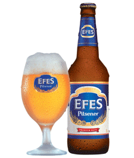

<トルコ語>
こんにちは：Merhaba メルハバ
ありがとう：Tesekkur ederim テシュッキュル・エデリム
東洋と西洋のクロスロード。アラビアンナイトの世界を楽しもう。
美しい建築のイスラム教礼拝堂モスクは必見。
本場仕込みのベリーダンスも捨て難い。
＜東京ではココで体験可能＞
代々木上原：東京ジャーミートルコ文化センター
ここは本当にオススメ！モスクだけど撮影OKで、撮った写真は日本とは思えないほどトルコ！！
モスクの入り口でスカーフも借りれるのでますますそれっぽい写真が撮れます。
渋谷・豊洲：バーヌのベリーダンス教室
→本場トルコのベリーダンスが習えます。体験は一回１０００円！要予約
世界三大料理のトルコ料理はちょっぴりスパイシー。
個人的にはウズガラキョフテ（トルコ風肉団子）がオススメ
フムスやドルマも外せない。
羊肉、オリーブやチーズも有名です。
おやつには是非、のび〜るアイスを！
＜東京ではココで体験可能＞
新宿:オリエントターキッシュ
平日ランチは950円から！
麻布十番：BURGAZ ADA
新宿・市ヶ谷：ボスボラス ハサン
毎週水・金・土曜日は20時からベリーダンスを観ることができるイベントが！
トルコビールといえばEFES！
暑い国のビールなのでサラッとした爽やかビール。
スパイシーな料理を引き立てる！
トルコ式のお風呂ハマム。
スチームにマッサージ、垢すりで綺麗になっちゃおう！
＜東京ではココで体験可能＞
原宿：ハマムバーアウラ
恵比寿：ジャンナ恵比寿
代々木上原：ジャンナ代々木上原
→トルコ式スチームバス『ハマム』と至福のマッサージが受けられます。
憧れのグランドバザールで宝探し。
キリム（絨毯）やタイルのなべ敷き、ナザールという目の形のお守りも可愛い。
食品は、オリーブオイルや香辛料、はちみつなんかが◎
＜東京ではココで体験可能＞
西荻窪：ソファ トルキッシュデコール
上記の東京ジャーミートルコ文化センターでもお土産売り場あり！
＜ランチ＞オリエントターキッシュ:新宿
お値打ちランチ♪のびるアイスも食べれます。
↓ 小田急線５分：160円
＜観光＞東京ジャーミートルコ文化センター:代々木上原
手軽に異国情緒あふれるモスクを体験！お土産も買っちゃおう。
↓徒歩
＜エステ＞ジャンナ代々木上原:代々木上原
トルコ式スチームバス『ハマム』でリラックス
↓26分：380円（小田急線→新宿→中央線）
＜ショッピング＞ソファ トルキッシュデコール：西荻窪
トルコ雑貨を買い漁ろう！
↓中央線14分：220円
＜ディナー＞ボスボラス ハサン:新宿
ベリーダンスショーを見ながら世界三大料理に舌鼓
ランチ、観光、エステ、ショッピング、ショー付きディナーという
盛りだくさんのツアーなのに、交通費760円のトルコの旅！
是非体験してみて！